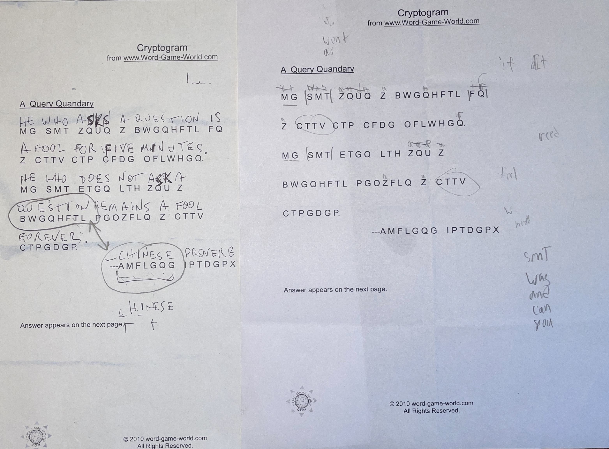
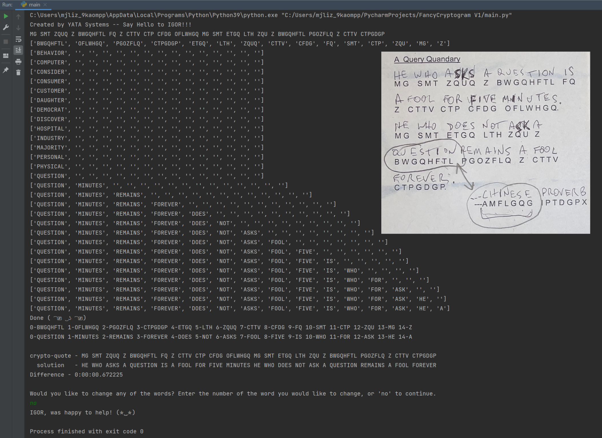
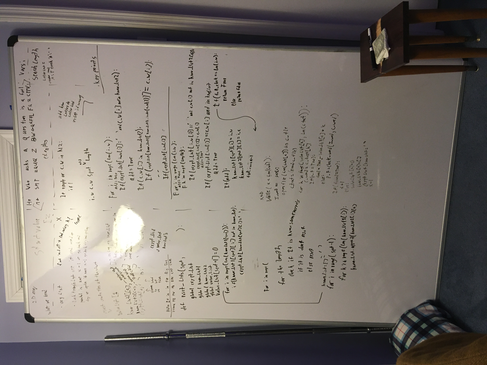

Cryptogram Solver
Cryptogram Examples
The Backstory
First, let me explain how this all started. It was just before February school break 2022 and I had just finished my first big project, a Wordle solver, and had learned a lot in the process (this is another one of my projects that will soon be displayed on the home page). The day before school break, my computer science teacher had an optional fun lesson about cryptography; I already knew about cryptograms from my dad and wanted to do some more work on my other projects, but, as class ended I grabbed an unsolved puzzle on my way out, because I knew my dad likes doing them. After I got home I showed it to my dad and he challenged me to solve it with him. So I made another copy and we began. My dad was flying through it; I started to solve it, only to get lost in the idea of creating a computer algorithm to solve one. So during the school break I spent most of my time in front of my white board creating a backtracking algorithm without even knowing what one was! I got really far and almost had it working. I showed what I had to my dad and he suggested that I try a very simple puzzle with only one long word to see if it would work. I used the encrypted version of the word "BEGINNING"… AND IT WORKED! I was so happy, it was already late at night but I was willing to stay up until I got it to work. The next day I got a rough version to solve all sorts of puzzles. From there I only continued to improve and optimize the program.
Images
Teachers Original Handout
(To view the image larger, just click on it!)
The photo to the left is the exact cryptogram that started this. The solved puzzle to the left in the photo is my dads work, and the other one is mine. I'm very happy that I had my dad to encourage me, though he was pretty skeptical after he saw what looked like hieroglyphics on my white board. After school break when I went back to school I was excited to show my computer science teacher the completed program and tell her that she inspired me to make it.
The snapshot of my program on the right is the solved cryptogram puzzle from above. It was solved by my computer program rather than a human(my dad). If you would like to know more on how this works check out the epilogue at the bottom of this page which goes into the overall functionality.
Solved Quote
(To view the image larger, just click on it!)
My Whiteboard
(To view the image larger, just click on it!)
I don't know what I would do without my whiteboard! The whiteboard in the photo was on its way to the curb before I saved it. Now it's in my room in an unobtrusive spot. It is a crucial part of my planning process, I often write my quick thoughts on it before I finalize them on paper.
Videos
This shows a modified version of my code solving cryptograms on a puzzle website I found.
This is the cryptogram solving the same puzzles from the website shown in the other video, just showing the webpage.
Epilogue
My program uses what some would call a brute force approach and consists of a few main parts. First we have the organizer; this organizes the words in a way to make more efficient guesses. It usually starts with the largest words of the puzzle first, contrary to a typical human’s strategy. My code has access to 22 word lists organized by word length. The lists are optimized in order of common to uncommon words; this is one of my optimization strategies. For example the beginning of word_list2 would have AS, AT, BE, BY, DO, GO… My code starts with a encrypted word like BWGQHFTL, and then tries every 8 letter word to see if their letters match up. For example, QUESTION would work. Then it would move onto the next word like OFLWHGQ and find that MINUTES works with QUESTION because their letters line up. The more we progress through the puzzle, the less likely a word will work because our vocabulary expands. For example right now we have (QUESTION = BWGQHFTL and MINUTES = OFLWHGQ) F=I, H=T, L=N, Q=S, G=E W=U in both words. The issue is when there are no more possibilities. At some point there were 2 or more possibilities and the algorithm just chose the first one it came across. We would then have to back track to where we made that wrong guess and try to find another one that would work further along in the program. It does this until it makes it to the end, where In some cases there might be a wrong word or two. For example, FP could be either IF or ID (my program doesn't take apostrophes into account). My program handles this by allowing the user to say which word they would like to try again, and then it usually fixes it.